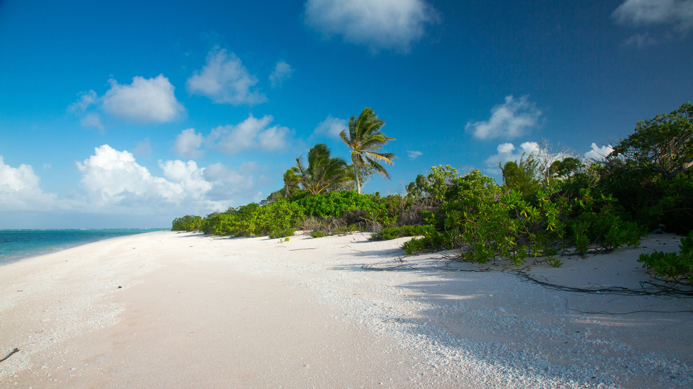

About Taniti Island
Island Overview
Taniti is a small tropical island in the Pacific, covering less than 500 square miles. Despite its size, the island features varied terrain including sandy and rocky beaches, a small but safe harbor, lush tropical rainforests, and a mountainous interior with a small, active volcano.
Population & Economy
The indigenous population of Taniti is approximately 20,000. Historically, the economy was dominated by fishing and agriculture, but tourism has grown significantly in recent years, creating new opportunities for local businesses and employment.
Practical Information for Visitors
- Power outlets provide 120 volts, the same as in the United States.
- Alcohol may not be served or sold between midnight and 9:00 a.m.
- The legal drinking age is 18, though enforcement is not strict.
- Many younger Tanitians speak fluent English, but rural areas and older residents speak very little English.
- Taniti has one hospital and several clinics. The hospital employs many multilingual staff.
- Violent crime is rare, but petty crime such as pickpocketing can occur, especially in tourist areas.
- Taniti observes many national holidays; some attractions and restaurants may be closed on these days.
- The U.S. dollar is the official currency, but euros and yen are often accepted. Several banks facilitate currency exchange, and major credit cards are widely accepted.
Travel Tips
Visitors should plan ahead for public holidays and bring appropriate adapters for electronics. While the island is generally safe, it is always recommended to be aware of personal belongings, especially in crowded areas.